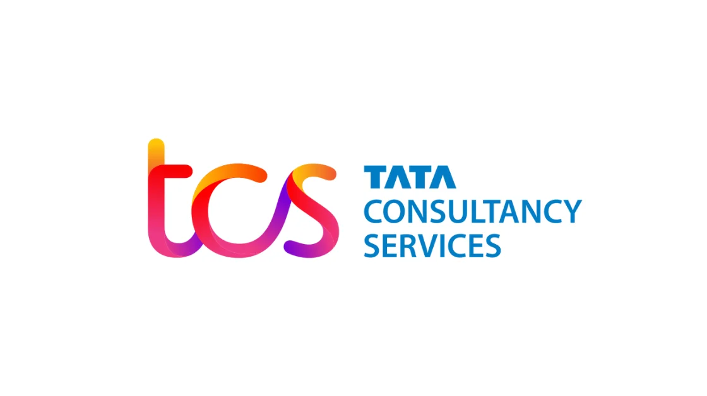

TCS Digital Hiring for Batch of 2022
TCS Digital Hiring for Batch of 2022 | Apply Now !
TCS has announced a job notification for the post of Digital Hiring. A student from various disciplines can apply for TCS Recruitment 2022. Interested and eligible candidates can read more details below

| Tcs Recruitment 2022 | |||
|---|---|---|---|
| 1 | Company name | Tcs | |
| 2 | Post Name | Digital Hiring | |
| 3 | Salary | 7.3 LPA | |
| 4 | Experience | Freshers | |
| 5 | Job Location | Across India | |
| 6 | Batch | 2022 | |
Job Description:
TCS is hiring candidates for the post of Digital Hiring.
Job Responsibilities
▪︎ Defining, analyzing and reviewing technical architecture on required platform and coming up with architecture options and recommendations. Will design, develop and/or re-engineer application components, and integrate software packages, programs, and reusable objects residing on multiple platforms.The Ability to support Technical Consultants and leads in building solutions and providing technical mentoring and guidance.
▪︎ Demonstrating strong knowledge of enterprise issues related to IT architecture.
▪︎ Defining, detailing, and scoping the technical requirements into solution architecture and ability to drive an independent project from an architectural standpoint.
▪︎ Will design, develop and/or re-engineer application components, and integrate software packages, programs, and reusable objects residing on multiple platforms.
▪︎ The Ability to support Technical Consultants and leads in building solutions and providing technical mentoring and guidance.
Eligibility Criteria:
▪︎ BE / B.Tech / ME / M.Tech / MCA / M.Sc. from Year of Passing 2022
▪︎ Digital Salary Package: 7.0 LPA (UG) & 7.3 LPA (PG)
Preferred skill:
▪︎ Team player and quick learner
▪︎ Good Communication- Verbal and Non Verbal skills
▪︎ Multi-Tasking
▪︎ Good Team Player
Application Process :
▪︎ The application process for TCS Digital Hiring for YoP 2022 comprises of below mandatory steps:
▪︎ Step 1. Logon to the TCS Next Step Portal here
▪︎ Step 2. Register and complete the application form on TCS NextStep portal. Status of your application should be ‘Application Received’ or above
▪︎ Scenario A. If you are a registered user, kindly login and proceed to complete the application form
▪︎ Scenario B. If you are a new user, kindly click on ‘Register Now’, then choose the category as “IT” and proceed to fill out your details. After that, submit your application form
▪︎ Step 3. Upon submission you would be prompted to the “Apply for Drive” screen. Click on Apply
▪︎ Step 4. In the Track Your Application menu, the status should be updated as “Applied for Drive”
About Tcs:
TCS Off Campus Hiring is an opportunity for you to chart a career path and realize your potential in working with trending technologies and collaborating with thought leaders across various domains and industries.
How to Apply for Indovance Recruitment 2022?
▪︎ Interested and Eligible candidates can apply for this drive online by scrolling down and clicking on Apply HERE.